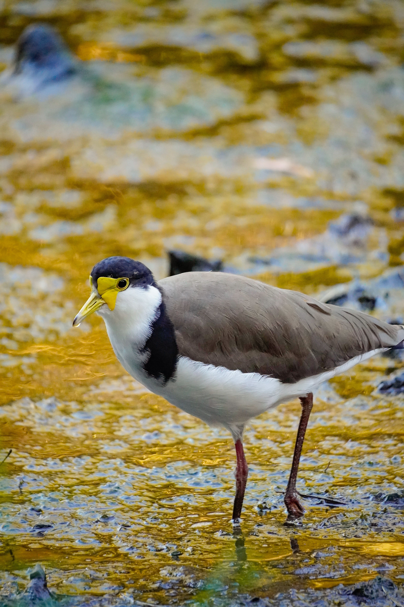

The Masked Lapwing is a large ground-dwelling wader with a conspicuous yellow facial mask, long legs and a distinctive spur on the wing. It is commonly seen in grasslands, wetlands, farmland, parks and even suburban areas. Unlike many waders that nest beside water, Masked Lapwings often lay their eggs in exposed open ground. Adults become extremely defensive around nests and chicks and may dive at perceived threats. They may also perform a broken-wing display, pretending to be injured to draw a predator away from the nest. Their loud calls and bold behaviour make them one of the most noticeable Australian waders.